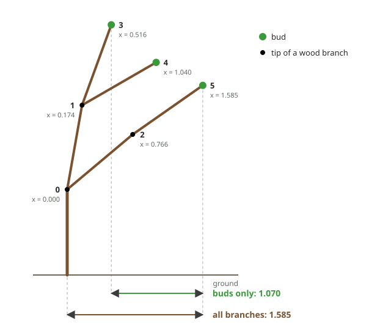
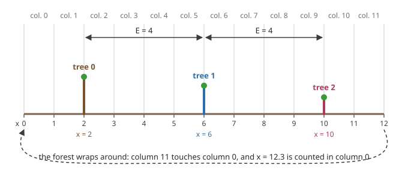
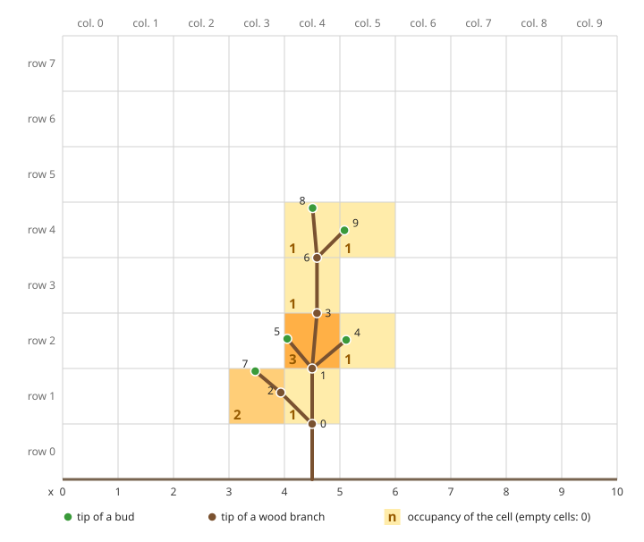

TI301 – Algorithms and Data Structures 2 · Computer Science and Mathematics Project
The Forest and the Light Part 2
This project is written jointly for the SDD2 and Probability modules.
Original idea, design, implementation: Nicolas FLASQUE Validation for the probability module: Federico ZALAMEA, Brice JUANICO Project website and animations: Nicolas FLASQUE and Claude Code Pro – Opus 5.5 model
In part 1, a tree grew on its own, in full light. It is now time to grow several trees at the same time. And since trees shade one another, the growth of each tree depends on that of its neighbours: a bud in the shade grows less often, and its branches are shorter.
Part 2 uses the functions of part 1: growBranch, canGrow, clampDirection, the branch queue and the t_arbre_step structure. They must be finished and validated before you start. The files of part 1 are not modified: all the code of part 2 is written in new files.
Project organisation
Part 1 Grow a single tree at random, in full light, and save it to a file;
Part 2 Grow a whole forest, in which trees shade one another;
Part 3 Simulate thousands of forests, analyse and visualise the results.
New French names in the code
As in part 1, the names of the types, fields and files stay in French. The new words of part 2:
French
English
French
English
foret
forest
lumiere
light
arbre_foret
tree of the forest
croissance_lumiere
growth in the light
hauteur
height
cime
top
nb_bourgeons
number of buds
tronque
truncated
occupation
occupancy
arbres
trees
pourcentages
percentages
identique
identical
sauver_foret
save the forest
cumul
running total
1A tree of the forest
To follow the growth of a forest, we need to know, at each season, the measurements of each of its trees:
its number of branches;
its height: the highest generation of its branches (the trunk is of generation 0);
its top: the highest altitude of a tip of its branches;
its extent: the width it occupies, that is the gap \(x_{max} - x_{min}\) between the largest and the smallest position \(x\) of a tip of its branches;
its number of buds, that is of branches without children.
We also record whether the tree is truncated: a tree that has become too big no longer grows (see The growing forest).
These measurements are kept up to date with each new branch: we never traverse the whole tree to know them, because most of its branches are wood, which no longer changes.
Step 1Measuring a tree
Goal
A tree of the forest is a t_arbre_step from part 1, to which we add its number in the forest and its measurements:
typedef struct s_arbre_foret {
t_arbre_step step; // the tree, its queue of buds and its season (part 1, step 3)
int id; // number of the tree in the forest
int hauteur; // highest generation of its branches
float cime; // highest altitude of the tips of its branches
float xmin, xmax; // smallest and largest x positions of the tips of its branches
int nb_bourgeons; // number of buds (the number of elements in the queue)
int tronque; // 1 if the tree has reached P_max branches: it no longer grows
} t_arbre_foret;
The number of branches is already kept up to date by growBranch, in step.arbre.nb_rameaux. The extent of the tree is xmax - xmin.
The other measurements will be kept up to date in step 3. To check these up-to-date measurements, you first need to be able to compute them “the old way”, by traversing the whole tree: that is the purpose of this step.
To do
Write the structure and the prototypes in the file arbre_foret.h, and the definitions in arbre_foret.c: both files are provided empty. Test them from src/main_p2_etape1.c (CMake target p2_etape_1).
The recursive measurements
Each of these functions receives a branch and measures the subtree of which it is the root; called on the trunk, it measures the whole tree.
Seven recursive functions
int countBranches(t_rameau *r): number of branches;
int computeHeight(t_rameau *r): highest generation;
float computeTop(t_rameau *r): highest altitude of a tip (the top);
float computeXMin(t_rameau *r) and float computeXMax(t_rameau *r): smallest and largest position \(x\) of a tip;
int countBuds(t_rameau *r): number of buds, that is of leaves;
void freeBranches(t_rameau *r): frees all the branches, including their arrays of children.
Hints: each one processes the branch r, then calls itself on its r->nb_fils children. For freeBranches, mind the order: you can no longer read r->p_fils once r has been freed.
OptionalFor the most advanced students
Replace computeXMin and computeXMax with a single recursive function, void computeExtension(t_rameau *r, float *p_xmin, float *p_xmax), which stores in *p_xmin and *p_xmax the smallest and the largest position \(x\) of a tip of the subtree of r. It must give the same values as the two functions. Is this version faster? Is its complexity better?
Another question: apart from freeBranches, your teacher claims that a single recursive function can be written for all these computations. What do you think?
Question to think about
For the top, looking at the buds would be enough. For the extent, you must look at all the branches, buds and wood. Why? Compare how a child is placed with respect to its parent, in altitude and in position \(x\).
In the following tree, which follows the growth rules of part 1 (lengths 1), the tips of buds 3, 4 and 5 go from \(x = 0.516\) to \(x = 1.585\): an extent of 1.070. But the tip of the trunk, which has become wood, is at \(x = 0\): the extent of the tree is 1.585.

The trunk and its children all go to the right: the extent measured on the buds alone is too small
Creating and freeing a tree of the forest
t_arbre_foret createForestTree(int id, float x, float y, int seed)
Role: creates tree number id, reduced to its trunk with tip \((x, y)\), with its measurements: height 0, top \(y\), \(x_{min} = x_{max} = x\), 1 bud, not truncated.
Hints: 😉 createTreeStep already does almost everything.
void freeForestTree(t_arbre_foret *a)
Role: frees the cells of the queue of buds, then all the branches of the tree.
Step 1 validation
Read the trees of part 1 with readTree, and measure them with your recursive functions, called on their trunk. You must get:
File
Branches
Height
Top
Extent
Buds
exemple1.txt
10
4
4.893
1.638
5
arbre_petit.txt
10
3
4.135
2.675
4
arbre_moyen.txt
38
8
8.311
9.280
10
arbre_grand.txt
5,518
30
30.926
46.720
1,432
For exemple1.txt, the example tree of part 1, check these values by hand: its buds are branches 4, 5, 7, 8 and 9, its top is the tip of branch 8, and its extent goes from the tip of branch 7 to that of branch 4.
The number of branches counted by countBranches is equal to the nb_rameaux field of the tree read.
A tree created by createForestTree(0, 0, 1, 1) has exactly the measurements computed by your recursive functions: 1 branch, height 0, top 1, extent 0, 1 bud.
Free each tree read with freeBranches, and each tree created with freeForestTree.
2Growing in the light
In the forest, each bud receives a light \(L\), between 0 (complete darkness) and 1 (full light), which depends on the branches located above it. The computation of this light comes with the forest (see The forest); in this part, we assume it is known.
The growth table
At each season, each bud receives a light \(L\), and applies the following table:
Light \(L\)
The bud grows…
Number of new branches, if it grows
\(L \geq 0.7\)
in 95% of cases
1 (70%), 2 (25%), 3 (5%)
\(0.4 \leq L < 0.7\)
in 70% of cases
1 (85%), 2 (15%)
\(0.15 \leq L < 0.4\)
in 40% of cases
1
\(L < 0.15\)
in 0% of cases: it stays dormant
–
How to read it: a bud in full light grows in 95% of cases; if it grows, it gives 1 new branch in 70% of cases, 2 in 25% of cases, 3 in 5% of cases. In full light, we therefore get exactly the growth of part 1. A bud that does not grow stays a bud and will try again at the next season. No branch dies: a bud deprived of light stays dormant.
Step 2The number of new branches
Goal
Generalise the howManyBranches function of part 1: draw, according to the light a bud that grows receives, its number of new branches. Drawing from a table of any size, and drawing whether a bud grows according to the light, are provided.
Provided code
The following two functions are written in croissance_lumiere.c, and their prototypes in croissance_lumiere.h. Read them: you are going to use the first one, and the second one will be used in step 3.
int drawFromTable(float pourcentages[], int n)
Randomly draws the number of a slice, between 0 and n - 1, in a table of n percentages (in %, their sum is 100). For example, with the table {70, 25, 5}, it returns 0 in 70% of cases, 1 in 25% of cases and 2 in 5% of cases. It draws a single number \(u\), then goes through the slices while adding up the percentages (see “Drawing from a table” in the Randomness in C section); it compares \(u\) with cumul / 100.0, exactly like howManyBranches, to get the trees of part 1 back.
int drawFromTable(float pourcentages[], int n)
{
int res = n - 1; // none of the first n - 1 slices: it is the last one
int trouve = 0;
float cumul = 0;
double u = randomReal(); // a single draw
for (int i = 0; i < n - 1 && !trouve; i++)
{
cumul += pourcentages[i];
// comparison with cumul / 100.0, like howManyBranches: we get exactly the trees of part 1 back
if (u < cumul / 100.0)
{
res = i;
trouve = 1;
}
}
return res;
}
int canGrowInLight(double lumiere)
Like canGrow of part 1, randomly draws whether a bud that receives the light lumiere grows, by applying the growth table. It returns 1 if the bud grows, 0 otherwise. A dormant bud (\(L < 0.15\)) grows in 0% of cases, but the draw canGrow(0) is still made: each bud makes one draw at each season, whatever its light.
int canGrowInLight(double lumiere)
{
int res;
if (lumiere >= 0.7)
{
res = canGrow(95);
}
else if (lumiere >= 0.4)
{
res = canGrow(70);
}
else if (lumiere >= 0.15)
{
res = canGrow(40);
}
else
{
// dormancy: the bud grows in 0% of cases, but the draw is made, as for any other light
res = canGrow(0);
}
return res;
}
To do
Write the following function in the files croissance_lumiere.h (prototype) and croissance_lumiere.c (definition), after the provided code, and test it, together with the provided code, from src/main_p2_etape2.c (CMake target p2_etape_2).
int howManyBranchesInLight(double lumiere)
Role: like howManyBranches of part 1, randomly draws the number of new branches (1, 2 or 3) of a bud that grows and receives the light lumiere, by applying the growth table. It is only called if canGrowInLight returned 1: the light is then at least 0.15.
Hints: a single draw, with drawFromTable and the table of the light (the table {100} is suitable for the last case).
Step 2 validation
Call each of the two functions 1,000,000 times for a few values of \(L\), and count the results. You must get numbers close (to within about 2,000) to those of the following tables.
Light
canGrowInLight returns 1
\(L = 1\)
950,000
\(L = 0.5\)
700,000
\(L = 0.2\)
400,000
\(L = 0.1\)
0
Light
1 branch
2 branches
3 branches
\(L = 1\)
700,000
250,000
50,000
\(L = 0.5\)
850,000
150,000
0
\(L = 0.2\)
1,000,000
0
0
No \(L = 0.1\) row for howManyBranchesInLight: a dormant bud never grows, so the function is never called for it.
With the same seed, you get exactly the same numbers.
For \(L = 1\), canGrowInLight(1) followed, if the bud grows, by howManyBranchesInLight(1) gives exactly the same results, in the same order, as canGrow(95) followed, if the bud grows, by howManyBranches(70, 25). Check it on 1,000 buds, by initialising the generator twice with the same seed.
The length of the new branches
When a bud grows, the rules of part 1 apply (directions, side, directions brought back between −80° and +80°), with a single difference: in the shade, branches are shorter. Each new branch has a length
$$\ell = (0.5 + 0.5 \times L) \times u$$
where \(u\) is drawn at random between 0.7 and 1.3. In full light (\(L = 1\)), we get the length of part 1 back.
Step 3Growing with a given light
Goal
Grow a tree of the forest season by season, like growTreeStep of part 1, but by applying the growth table with a given light, the same for all its buds, and by keeping its measurements up to date with each new branch.
To do
Write the following functions in arbre_foret.h and arbre_foret.c, and test them from src/main_p2_etape3.c (CMake target p2_etape_3).
The clampDirection function is defined in croissance.c, without a prototype in croissance.h: to use it, write its prototype, float clampDirection(float);, at the beginning of arbre_foret.c.
void growBudInLight(t_arbre_foret *a, t_rameau *b, int n, double lumiere)
Role: like growBud of part 1, creates n new branches at the tip of the bud b, at season a->step.saison, but with the length \(\ell = (0.5 + 0.5 \times L) \times u\). It also keeps up to date the height, the top, \(x_{min}\), \(x_{max}\) and the number of buds of the tree.
Hints:
make the draws in the same order as growBud: direction (or side then angle), then \(u\) = randomBetween(0.7, 1.3);
the bud b becomes wood and its n children are buds: how many buds has the tree gained?
void growSeason(t_arbre_foret *a, double lumiere)
Role: plays one season for the tree a, like growTreeStep of part 1, by giving the same light lumiere to all its buds.
Hints: the loop is the one of growTreeStep; only the draws change. For each bud, canGrowInLight(lumiere) replaces canGrow(95); if it grows, and only in that case, howManyBranchesInLight(lumiere) replaces howManyBranches(70, 25), then growBudInLight replaces growBud.
Step 3 validation
In full light (\(L = 1\)), a tree created at \((0, 1)\) that grows with growSeason is exactly the tree of part 1: with seed 5 and 3 seasons, you get arbre_petit.txt back; with seed 3 and 8 seasons, arbre_moyen.txt; with seed 4 and 30 seasons, arbre_grand.txt (5,518 branches). The files round the directions and lengths to two decimal places: the top of the tree that has grown (4.130 for arbre_petit.txt) therefore differs slightly from that of the tree read in step 1 (4.135).
After each season, the up-to-date measurements (number of branches, height, top, number of buds) are exactly those computed by your recursive functions. Write an automatic test that checks it for 100 seeds, 20 seasons, with \(L = 1\) then \(L = 0.5\).
The height of the tree never exceeds the season number, and it increases by at most 1 at each season.
With seed 1 and 20 seasons, at \((0, 1)\): for \(L = 1\), you get 493 branches, a height of 20, a top at 19.869, an extent of 31.761 and 117 buds; for \(L = 0.5\), 62 branches, a height of 19, a top at 14.509, an extent of 8.358 and 10 buds.
3The forest
What is a forest?
The ground of the forest is divided into columns of width 1, numbered from 0: column \(c\) contains the positions \(x\) between \(c\) (included) and \(c + 1\) (excluded).
A forest is a line of \(K\) trees planted at regular intervals: one tree every \(E\) columns, where \(E\) is the spacing. The forest therefore has \(C = K \times E\) columns, numbered from 0 to \(C - 1\).
Tree number \(i\) (from 0 to \(K - 1\)) is planted at \(x = i \times E + E / 2\). At season 0, it has only one vertical branch, its trunk, whose tip is at an altitude drawn at random between 0.5 and 1.5.
The forest wraps around: column \(C - 1\) is next to column 0, as in Pac-Man. A branch keeps its position \(x\), even if it goes outside the interval between 0 and \(C\): it is its column that wraps around. The column of a position \(x\) is its integer part, taken modulo \(C\).
Example. With \(K = 3\) trees and a spacing \(E = 4\), the forest has \(C = 12\) columns, numbered from 0 to 11. Trees 0, 1 and 2 are planted at \(x = 0 \times 4 + 2 = 2\), \(x = 6\) and \(x = 10\). A branch whose tip arrives at \(x = 12.3\) keeps this position, but it is counted in column 0; a branch whose tip arrives at \(x = -0.5\) is counted in column 11.

The forest of the example at season 0 (\(K = 3\), \(E = 4\)): three trunks, with altitudes drawn at random
The other parameters
\(A\), between 0 and 1: the share of light held back by each branch tip (see The shading principle).
\(H_{max}\): like the ground in columns, the height is divided into rows of height 1, numbered from 0 from the ground: row \(r\) contains the altitudes \(y\) between \(r\) (included) and \(r + 1\) (excluded). \(H_{max}\) is the number of rows taken into account for the shade: a branch tip at altitude \(y \geq H_{max}\) is counted in the last row, row \(H_{max} - 1\). For example, in the forest of the example above (\(C = 12\)) with \(H_{max} = 160\), a branch whose tip is at \((x, y) = (6.4, 2.7)\) is counted in row 2 and column 6, that is in cell \((2, 6)\) of the grid (see The shading principle).
The shading principle
To know how much light a bud receives, we do not go through all the branches of the forest: we divide the forest into a grid of cells, by crossing its \(C\) columns and its \(H_{max}\) rows, and we keep two grids of the same size up to date.
The occupancy grid
Cell \((r, c)\) is the part of column \(c\) located in row \(r\): it contains the points whose position \(x\) is between \(c\) and \(c + 1\), and whose altitude \(y\) is between \(r\) and \(r + 1\) (lower bounds included, upper bounds excluded).
The occupancy of a cell is the number of branches, of all the trees, buds or wood, whose tip is in this cell. A tip at altitude \(y \geq H_{max}\) counts in the last row.
For example, the tree exemple1.txt of part 1, alone in a forest of 10 columns and 8 rows, has its 10 branch tips in 7 cells, all in columns 3 to 5 and rows 1 to 4; all the other cells are empty:
Row
Column 3
Column 4
Column 5
4
0
1 (branch 8)
1 (branch 9)
3
0
1 (branch 6)
0
2
0
3 (branches 1, 3 and 5)
1 (branch 4)
1
2 (branches 2 and 7)
1 (branch 0)
0
0
0
0
0

The tree exemple1.txt in the occupancy grid: only the tip of each branch counts, not the whole branch
Beware of display rounding: branch 3 has its tip at altitude \(2 + \cos(5^\circ) \approx 2.996\), displayed as 3.00 with two decimal places: it is in row 2, and not in row 3. Likewise, branch 6 is in row 3.
The size of the grids
The two grids have the same size: \(H_{max}\) rows and \(C = K \times E\) columns, that is \(H_{max} \times C\) cells each. The occupancy grid contains integers, the light grid real numbers. In the typical simulation (\(H_{max} = 160\), \(C = 250\)), each grid has 160 rows and 250 columns, that is 40,000 cells.
Step 4Filling the occupancy grid
Goal
A forest brings together several trees and the two grids they share:
typedef struct s_foret {
int K, E, C, HMAX; // number of trees, spacing, columns (C = K x E), rows
double A; // share of light held back by a branch tip
int P_max; // maximum number of branches of a tree
t_arbre_foret *arbres; // dynamic array of the K trees
int **occupation; // HMAX x C counters of branch tips
double **lumiere; // HMAX x C lights
int saison; // number of seasons already elapsed
} t_foret;
The arrays occupation and lumiere are grids of HMAX rows and C columns, dynamically allocated in two dimensions: an array of HMAX pointers, each one to a row of C cells. Cell \((r, c)\) is occupation[r][c], or lumiere[r][c].
This step creates the forest and fills its occupancy grid; the light grid will be computed in step 5.
Provided code
The following two functions are written in foret.c, and their prototypes in foret.h. They return the column and the row of the cell that contains the point with abscissa x or altitude y. The forest wraps around: the position x may be negative, or at least equal to C, and its column is its integer part modulo C (in C, -1 % 12 is −1: hence the correction when the remainder is negative). An altitude of at least HMAX is in the last row.
int columnOf(t_foret *f, float x)
{
// in C, -1 % 12 is -1: the remainder is brought back between 0 and C - 1
int c = (int) floorf(x) % f->C;
if (c < 0)
{
c += f->C;
}
return c;
}
int rowOf(t_foret *f, float y)
{
int r = (int) floorf(y);
if (r >= f->HMAX)
{
r = f->HMAX - 1;
}
else if (r < 0)
{
r = 0; // does not happen (a child is always higher than its parent): mere precaution
}
return r;
}
To do
Write the structure t_foret at the beginning of the file foret.h, at the indicated place: as long as it is not written, the provided code does not compile. Then write the prototypes of the following functions in foret.h, and their definitions in foret.c, after the provided code. Test them from src/main_p2_etape4.c (CMake target p2_etape_4).
t_foret createForest(int K, int E, int HMAX, double A, int P_max)
Role: creates a forest of K trees, not yet planted: it allocates the array of trees and the two grids, and sets the occupancy counters to 0.
Hints: for each grid, first allocate the array of the HMAX row pointers, then each row of C cells.
void addToGrid(t_foret *f, t_rameau *r)
Role: adds 1 to the occupancy counter of the cell where the tip of branch r is. It will be called for each new branch of the forest, at the time it is created.
Hints: the cell of the tip \((x, y)\) of r is in row rowOf(f, r->y) and column columnOf(f, r->x): addToGrid must call these two provided functions, and never compute the cell itself.
void addTreeToGrid(t_foret *f, t_rameau *r)
Role: adds to the grid the tip of r and of all the branches of its subtree. It is used for a tree that has already been built, for example read from a file.
Hints: a recursive function, modelled on countBranches, that calls addToGrid.
Step 4 validation
In the forest of the example (\(K = 3\), \(E = 4\), hence 12 columns, and \(H_{max} = 160\)): columnOf(&f, 6.4) is 6, columnOf(&f, 11.99) is 11, columnOf(&f, 12.3) is 0, columnOf(&f, -0.5) is 11, rowOf(&f, 2.7) is 2 and rowOf(&f, 163.2) is 159.
Create a forest of 1 tree, with 10 columns (\(E = 10\)) and 8 rows, with \(A = 0.5\), and store in its tree 0 the tree read from exemple1.txt: f.arbres[0].step.arbre = readTree("data/exemple1.txt");, then add its branches to the grid with addTreeToGrid. You must get the occupancy of the table above; the sum of all the counters is 10, the number of branches of the tree.
Build two or three other cases by hand, including a branch at an altitude greater than HMAX (it is counted in the last row).
The light grid
Light comes from the sky. Each branch tip it goes through holds back a share \(A\) of it (a parameter of the forest, for example \(A = 0.25\)). In a cell, the light received is therefore:
$$L = (1 - A)^n$$
where \(n\) is the number of branches (of all the trees, buds or wood) whose tip is in the same column and in a strictly higher row. A cell with no branch above it receives a light of 1.
Example. A column contains three branch tips: two in row 5 and one in row 9. With \(A = 0.5\), the light is 1 in rows 9 and above, \(0.5\) in rows 5 to 8, and \(0.5 \times 0.5 \times 0.5 = 0.125\) in rows 0 to 4.
Examples
Here is the light of the cells of the forest of the tree exemple1.txt, with \(A = 0.5\). Columns 0 to 2 and 6 to 9, and rows 5 to 7, receive a light of 1. A tree shades itself: its bud 5 now receives only 0.25 of light.
Row
Column 3
Column 4
Column 5
4
1
1 (branch 8)
1 (branch 9)
3
1
0.5 (branch 6)
0.5
2
1
0.25 (branches 1, 3 and 5)
0.5 (branch 4)
1
1 (branches 2 and 7)
0.03125 (branch 0)
0.25
0
0.25
0.015625
0.25
Here is the growth of a single tree, season by season, with \(A = 0.5\). On the left, the occupancy of the grid: the number of branch tips of each cell, written in its corner; the tips of the buds are green dots, those of the wood small black dots. On the right, the light of each cell, computed from this occupancy: it is the light its buds will receive at the next season. The colour of a cell shows the row of the growth table (see Growing in the light) that will apply to its buds. The tree shades itself: its lower branches end up in the dark, only those at the top still grow.

A single tree: occupancy and light (seed 3, 8 seasons, \(A = 0.5\), one season = 1.2 seconds)
Step 5Computing the light
Goal
Compute the light grid from the occupancy grid, then read the light that a bud receives.
To do
Write the following functions in foret.h and foret.c, and test them from src/main_p2_etape5.c (CMake target p2_etape_5).
void computeLight(t_foret *f)
Role: computes the light of all the cells of the grid, from the occupancy, already up to date.
Hints: compute the light column by column, from top to bottom, in a single pass per column: going down, keep the light \((1 - A)^n\) up to date, by multiplying it by \((1 - A)\) for each tip encountered. Beware: the tips of a cell shade the rows below, not their own cell.
double getLight(t_foret *f, t_rameau *r)
Role: returns the light of the cell where the tip of branch r is.
Step 5 validation
Build by hand the column of the example (three tips, \(A = 0.5\)): you must get 1, 0.5 and 0.125.
Take the forest of the tree exemple1.txt from step 4 again. After computeLight, you must get the values of the light table above; in particular, buds 4, 5, 7, 8 and 9 receive a light of 0.5, 0.25, 1, 1 and 1.
4The growing forest
How a season unfolds
A season unfolds in two stages:
Light up: compute the light of each cell, from the number of branch tips of each cell;
Grow: play all the buds of all the trees, from tree 0 to tree \(K - 1\), with the lights computed in stage 1.
The number of tips of each cell, the occupancy of the grid, is kept up to date: each new branch is added at the time it is created, without ever counting all the branches of the forest again. Since the light is computed in stage 1, a branch created during a season is taken into account, for the light, only from the next season. A simulation lasts \(S\) seasons (for example \(S = 120\)).
A tree must not grow without limit: a tree that has at least \(P_{max}\) branches at the end of a season (for example \(P_{max} = 20{,}000\)) is marked truncated, and it no longer grows.
The seed of the generator fixes all the draws: with the same seed and the same parameters, you get exactly the same forest.
Example. The parameters of a typical simulation:
Parameter
Role
Value
\(K\)
number of trees
50
\(E\)
spacing between two trees
5
\(C = K \times E\)
number of columns
250
\(A\)
share of light held back by a tip
0.25
\(H_{max}\)
number of rows
160
\(P_{max}\)
maximum number of branches of a tree
20,000
\(S\)
number of seasons
120
Here is now a small forest. Choose the number of trees \(K\), the spacing \(E\) between two trunks (the grid therefore has \(C = K \times E\) columns), the share of light \(A\) held back by a tip, the number of seasons \(S\) and the seed, then start the simulation. With the same seed and the same settings, you always get the same forest; the “Random seed” button draws another one. The branches that leave the grid on the right reappear on the left: the forest wraps around.
With the initial settings (\(K = 3\), \(E = 3\), \(A = 0.25\), \(S = 10\), seed 6), the trees are planted at \(x = 1.5\), \(x = 4.5\) and \(x = 7.5\). Tree 2 falls behind and stays in the shade of its neighbours: 16 branches, against 39 and 53 for the other two. Bring the trees closer (\(E = 1\)) and make them opaque (\(A = 1\)): the forest now has only 26 branches, against 108. Tick “Trunks at the same altitude”: the trees then start on an equal footing, and the differences between them come only from the growth draws.
Below the figure, pause the animation and step forward season by season; hover over a cell (or tap it) to see how its light is computed. The table gives the measurements of each tree at the end of the simulation.
Set the sliders, then start the simulation.

A forest of 3 trees, E = 3, so 9 columns; A = 0.25; seed 6; 10 seasons; random trunk altitudes; one season = 1.2 seconds
Step 6Growing a forest
Goal
Put everything together: plant the \(K\) trees, then play the seasons in two stages, light up then grow.
To do
Write the following functions in foret.h and foret.c, and test them from src/main_p2_etape6.c (CMake target p2_etape_6).
void plantForest(t_foret *f, int seed, int identique)
Role: plants the \(K\) trees of the forest, tree i at \(x = i \times E + E / 2\), and initialises the random generator with the seed seed. With identique set to 1, all the trunks have their tip at altitude 1; otherwise, the altitude of each trunk is drawn at random between 0.5 and 1.5.
Hints:
first create the \(K\) trees with createForestTree, with a trunk at altitude 1;
createTreeStep, and therefore createTree, has reinitialised the random generator for each tree: call randomInit(seed)afterwards, only once for the whole forest;
then, if identique is 0, draw the altitude of the trunk of each tree, from tree 0 to tree \(K - 1\), with randomBetween(0.5, 1.5), and update the trunk (its \(y\) and its length) and the top of the tree;
finally, add the trunk of each tree to the grid, at its final altitude, with addToGrid.
Role: plays one season for the tree a of the forest f, like growSeason, but each bud receives the light of its cell, read from the grid with getLight.
Hints:
the season of the tree increases by 1, even if it is truncated; a truncated tree makes no draw;
each new branch is added to the grid with addToGrid; its position \(x\) is not modified: it is columnOf that makes the forest wrap around;
at the end of the season, a tree that has at least P_max branches is marked truncated.
void growForestSeason(t_foret *f), void simulateForest(t_foret *f, int S) and void freeForest(t_foret *f)
Role: growForestSeason plays one season for the whole forest, in two stages: computeLight, then the season of each tree, from tree 0 to tree \(K - 1\). simulateForest plays \(S\) seasons. freeForest frees all the trees, then the arrays of the forest: for each grid, the rows first, then the array of row pointers.
Question to think about
Why do we compute all the lights before growing a single bud? What would happen if the grid were updated after each tree? Which tree would be favoured?
Step 6 validation
For each tree, the up-to-date measurements are those computed by your recursive functions, and the sum of the numbers of branches of the trees is equal to the sum of the occupancy counters of the grid. Even better: the up-to-date occupancy is exactly that of a new grid, filled with addTreeToGrid for all the trees.
With a single tree (\(K = 1\), \(E = 10\)), \(A = 0\) (no shade), identical planting and seed 3, after 8 seasons, you get the tree of arbre_moyen.txt back, shifted by 5 to the right: each branch has the same altitude, and a position \(x\) greater by 5.
With the same seed, two simulations give exactly the same forest.
With \(K = 24\), \(E = 3\), \(A = 0.25\), \(H_{max} = 160\), \(P_{max} = 20{,}000\), seed 1 and 32 seasons, the forest has 6,809 branches; tree 0 has 352 branches, a height of 32, a top at 33.009, an extent of 17.479 and 87 buds; tree 7, smothered by its neighbours, has only 17 branches, a height of 8 and an extent of 3.941.
See your forest
The saveForest function, provided in sauver_foret.c, writes a forest to a text file. The Viewer page draws this file: you get a PNG image and an animated GIF of its growth. It also accepts the files written by saveTree (part 1).
The provided file data/foret_exemple.txt is the forest of the last validation (\(K = 24\), seed 1, 32 seasons): write yours with saveForest, and drop both files; you must get exactly the same image.
OptionalUpdating the grid during growth
Program the variant in which the grid is recomputed after each tree, and compare the heights of tree number 0 and tree number \(K - 1\) in both versions.
5Randomness in C
You keep using the alea.h / alea.c module of part 1; the rand() function is still forbidden. The seed is a parameter of the simulation: with the same seed, you get exactly the same forest.
⚠️ As in part 1, do not call randomInit yourself, with a single exception: plantForest, which initialises the random generator once for the whole forest, after creating its trees.
Drawing from a table
To choose 1, 2 or 3 new branches in 70%, 25% and 5% of cases, we draw a number \(u\) = randomReal(), then return 1 if \(u < 0.70\); otherwise 2 if \(u < 0.70 + 0.25 = 0.95\); otherwise 3. Each result corresponds to a “slice” of the interval between 0 and 1, whose width is the desired percentage.
With a table of \(n\) percentages, we do the same: we add up the percentages, slice after slice, until the first slice whose running total exceeds \(u\).